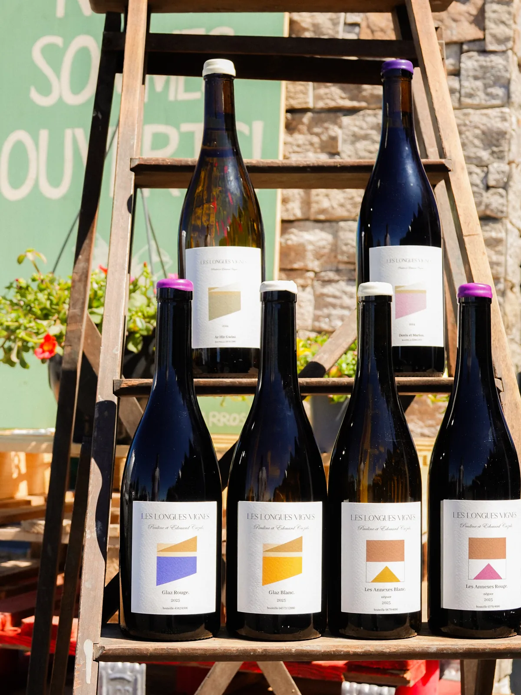
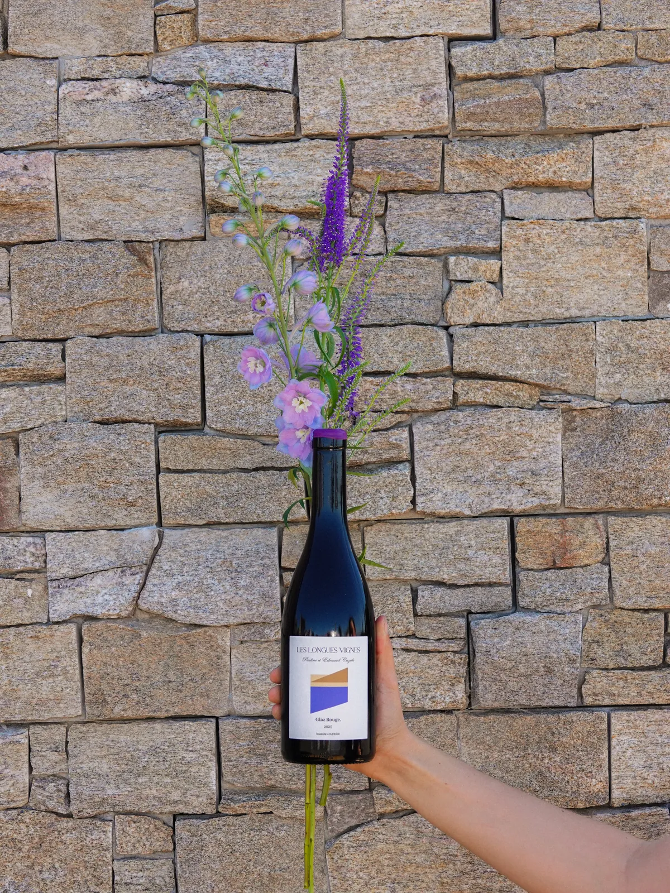

Bretagne
LLV
Degemer mat à St-Malo, ou juste à côté du moins !
Installés à St-Jouan-des-Guérets depuis 2019, Pauline et Edouard Cazals incarnent le renouveau du vignoble breton. Sur les 4,3 ha qu'ils exploitent, chardonnay, pinot noir et grolleau s'épanouissent à merveille.
Le résultat : des vins d'une pureté merveilleuse !
Le coup de cœur de Tanguy : Glaz Blanc, divin chardonnay.
C'est bon, normal c'est breton ! Et toi, tu savais qu'on faisait du vin en Bretagne ? On en a plein à la boutique.

